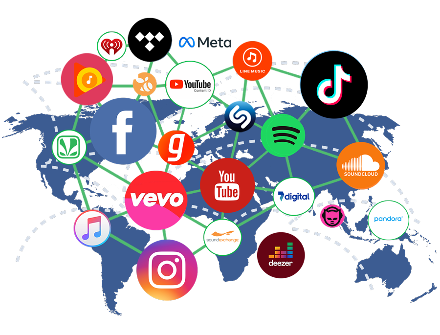
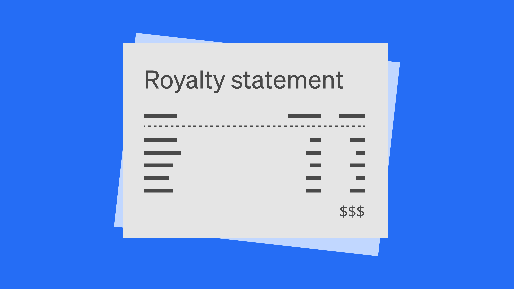
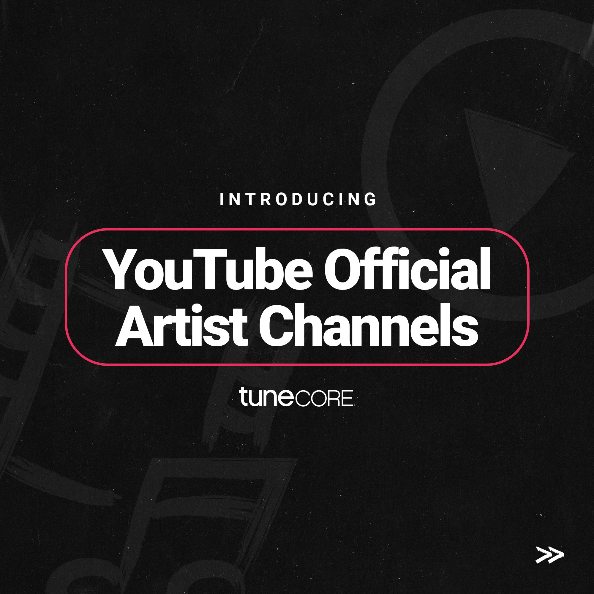

BMG ဘလော့
ဂီတလုပ်ငန်းဆိုင်ရာ နောက်ဆုံးရ ဗဟုသုတများနှင့် အောင်မြင်သော အနုပညာရှင်တစ်ယောက်ဖြစ်လာရန် လမ်းညွှန်ချက်များ
နောက်ဆုံးထွက် ဆောင်းပါးများ

Music Metadata ဆိုတာ ဘာလဲ? Digital ဖြန့်ချိရေးအတွက် ဘာကြောင့် အရေးကြီးသလဲ?
Digital ခေတ်မှာ သီချင်းတစ်ပုဒ်ရဲ့ အချက်အလက် (Metadata) တွေဟာ သင့်သီချင်းကို မှန်ကန်စွာ ဖြန့်ချိနိုင်ဖို့နဲ့ Royalty ဝင်ငွေတွေ အတိအကျရရှိဖို့အတွက် အထူးအရေးကြီးပါတယ်။
ဆက်လက်ဖတ်ရှုရန်Artist Verification ဆိုတာ ဘာလဲ? Digital Platform တွေပေါ်မှာ ဘာကြောင့် အရေးကြီးသလဲ?
Spotify, Apple Music နဲ့ YouTube တို့မှာ Blue Tick / Artist Verification ရရှိခြင်းက ပရိသတ် ယုံကြည်မှုနဲ့ Brand တည်ဆောက်ရေးအတွက် ဘယ်လိုကူညီပေးသလဲ။
ဆက်လက်ဖတ်ရှုရန်အနုပညာရှင်တွေအတွက် Royalties (မူပိုင်ခွင့်ကြေး) ဆိုတာ ဘာလဲ? ဘယ်လိုခွဲဝေလဲ?
Digital Streaming Platform တွေဆီမှ စီးဆင်းလာသော Royalty ဝင်ငွေများ တွက်ချက်ပုံနှင့် အနုပညာရှင်များ ရထိုက်သော ရပိုင်ခွင့်များအကြောင်း အသေးစိတ်ရှင်းပြထားပါသည်။
ဆက်လက်ဖတ်ရှုရန်
TikTok နှင့် Reels အတွက် သင့်သီချင်းကို ဘယ်လို Marketing ဆင်းမလဲ?
လူမှုကွန်ရက်ပေါ်တွင် သင့်သီချင်း ဗိုင်းရပ်စ် (Viral) ဖြစ်သွားစေရန် အတိုချုံ့ဗီဒီယို Content များဖြင့် မည်သို့ စနစ်တကျ မားကက်တင်းလုပ်ရမည်ကို လေ့လာလိုက်ပါ။
ဆက်လက်ဖတ်ရှုရန်
Official Artist Channel (OAC) ရရှိခြင်း၏ အကျိုးကျေးဇူး ၅ ချက်
YouTube ပေါ်တွင် ဂီတသင်္ကေတ တံဆိပ် (Note Icon) ပါဝင်သော OAC ရရှိခြင်းဖြင့် သင့် Channel ကို မည်သို့ ပိုမို Professional ဆန်စေကြောင်း ဖော်ပြထားပါသည်။
ဆက်လက်ဖတ်ရှုရန်မြန်မာနိုင်ငံတွင် ဂီတမူပိုင်ခွင့်ကို ဘယ်လို ကာကွယ်မလဲ?
မိမိဖန်တီးထားသော သီချင်းများကို အခြားသူများ ခွင့်ပြုချက်မရှိဘဲ အသုံးပြုခြင်းမှ ကာကွယ်ရန် နည်းပညာနှင့် ဥပဒေကြောင်းအရ သိထားသင့်သည်များ။
ဆက်လက်ဖတ်ရှုရန်